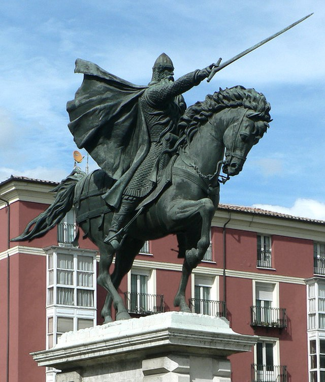

s
sHistoria y cultura
Descubre Burgos
La Cuna del Cid Campeador
Burgos es conocida como la cuna del Cid Campeador, uno de los personajes más importantes de la literatura medieval española. El Cid nació en Vivar, una pequeña localidad cercana a Burgos, y su vida y hazañas están muy ligadas a la ciudad.
La figura del Cid es una parte fundamental del patrimonio cultural de la ciudad y una de las principales atracciones turísticas. Si te interesa la historia medieval española, no puedes dejar de visitar Burgos y conocer más sobre la vida y leyendas del Cid Campeador.
Información obtenida de turismoburgos.com
